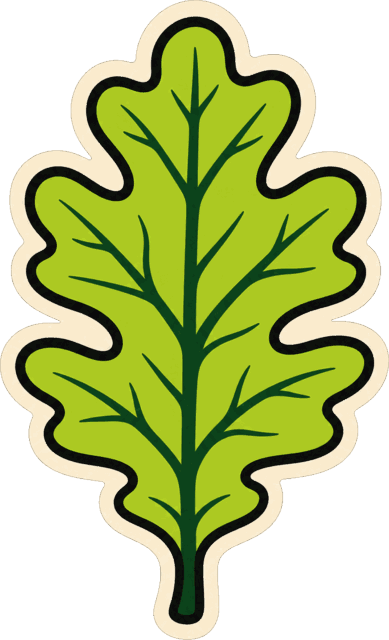
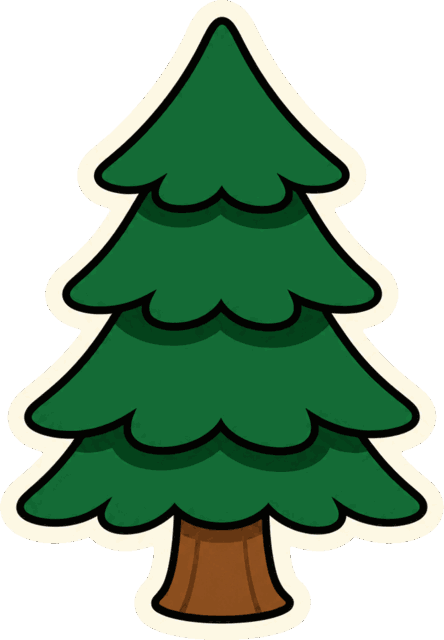
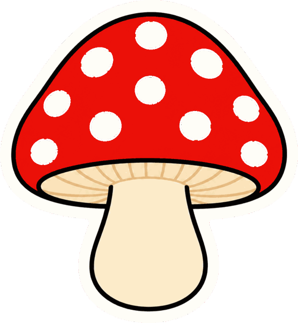
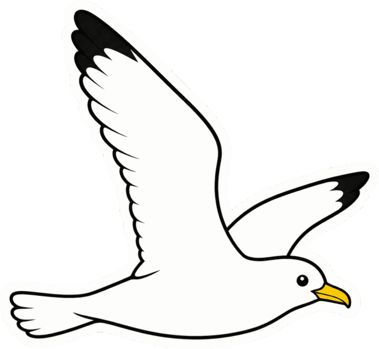

Frameless component · the physical primitive
sticker
A printed thing, die-cut out of a sheet and laid on the page — with a real shadow underneath it. Every collectible element in this kit is this shape.
Use it when
- Anything should read as an object rather than as a div.
- You are building a badge, a tag, a chip, a lockup or a card.
- You want depth. That is what this primitive is for.
Don't use it when
- It is running text. Words are not objects.
- You were going to use
box-shadow. Use the filter. - You were going to place it at
0deg. Decorative stickers are never square.
The illustrated set
These PNGs already carry their own cream cut edge, so the shadow goes straight on the image. filter: drop-shadow() follows the illustration's alpha, which traces the actual die-cut outline — a box-shadow here would draw a rectangle behind a leaf.





With the shadow, and without
The same image twice. The right-hand one is what this kit shipped before the rebuild, and it is the difference the owner named: "this image was so great because the depth, and the text shadow / sticker feel."
--elev-sticker
filter: none
A die-cut object lying flat on the page.
Fill, tinted keyline, thick band, drop shadow, tilt.
Built from markup
The .die-cut primitive from ../tokens/sticker.css. Set three custom properties and you have a sticker; the band geometry, the corner radius, the shadow and the rest tilt come with it.
<span class="die-cut" style="--cut-fill: var(--fw-react);
--cut-keyline: var(--fw-react-keyline);
--cut-band: var(--fw-react-band);">
<span class="die-cut__fill">React</span>
</span>
The band is 6–8% of the object's width
Chunky, and measured — on avara.xyz's stickers by zooming in, and corroborated against the concept art. The previous kit used 3.2%, taken off flat PNG exports, and at that width a band reads as a border rather than as cut paper.
Two forms. --sticker-band-fixed (0.7rem) is right at control scale, where a proportion of a 44px button is not a meaningful quantity. --sticker-band is clamp(0.5rem, 7cqw, 2rem) and scales with the object — but an element cannot query itself. Put container-type: inline-size on the element that also consumes it and cqw resolves against the nearest ancestor container, or against the viewport if there is none. No error, wrong everywhere.
.sticker-frame { container-type: inline-size; } /* WRAPPER */
.sticker-frame .die-cut { padding: var(--sticker-band); } /* DESCENDANT */
measuring…
The peel
A corner physically lifting off the page. It raises the object one step on the elevation scale, from --elev-sticker to --elev-lifted — the shadow growing is the part the eye reads as lift. Hover or tab to it.
Rest tilt
−3.0° is not a guess. It is the "overall tilt" default exposed as a labelled slider by Sticker Forge (sticker.oooo.so), which is a real sticker tool rather than an intuition about one. Four values, all within ±1.5° of it, deliberately unequal and deliberately not mirrored, cycled across siblings so a row looks placed by hand.
| Token | Value |
|---|---|
--tilt-rest | −3deg — the measured resting value |
--tilt-1 | −3deg |
--tilt-2 | −1.5deg |
--tilt-3 | −4.25deg |
--tilt-4 | 2deg |
The tilts are a resting state, not an animation, so prefers-reduced-motion leaves them alone. So does the shadow: elevation is not movement.